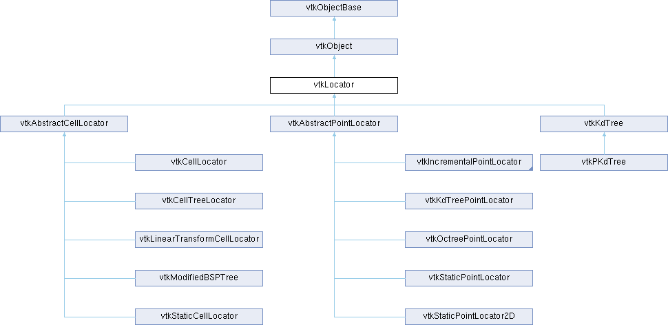

|
Etrek
|
|
Etrek
|
abstract base class for objects that accelerate spatial searches More...
#include <vtkLocator.h>

Public Member Functions | |
| virtual void | Update () |
| virtual void | Initialize () |
| virtual void | BuildLocator ()=0 |
| virtual void | ForceBuildLocator () |
| virtual void | FreeSearchStructure ()=0 |
| virtual void | GenerateRepresentation (int level, vtkPolyData *pd)=0 |
| vtkTypeMacro (vtkLocator, vtkObject) | |
| void | PrintSelf (ostream &os, vtkIndent indent) override |
| virtual void | SetDataSet (vtkDataSet *) |
| vtkGetObjectMacro (DataSet, vtkDataSet) | |
| vtkSetClampMacro (MaxLevel, int, 0, VTK_INT_MAX) | |
| vtkGetMacro (MaxLevel, int) | |
| vtkGetMacro (Level, int) | |
| vtkSetMacro (Automatic, vtkTypeBool) | |
| vtkGetMacro (Automatic, vtkTypeBool) | |
| vtkBooleanMacro (Automatic, vtkTypeBool) | |
| vtkSetClampMacro (Tolerance, double, 0.0, VTK_DOUBLE_MAX) | |
| vtkGetMacro (Tolerance, double) | |
| vtkSetMacro (UseExistingSearchStructure, vtkTypeBool) | |
| vtkGetMacro (UseExistingSearchStructure, vtkTypeBool) | |
| vtkBooleanMacro (UseExistingSearchStructure, vtkTypeBool) | |
| vtkGetMacro (BuildTime, vtkMTimeType) | |
| bool | UsesGarbageCollector () const override |
| Public Member Functions inherited from vtkObject | |
| vtkBaseTypeMacro (vtkObject, vtkObjectBase) | |
| virtual void | DebugOn () |
| virtual void | DebugOff () |
| bool | GetDebug () |
| void | SetDebug (bool debugFlag) |
| virtual void | Modified () |
| virtual vtkMTimeType | GetMTime () |
| void | PrintSelf (ostream &os, vtkIndent indent) override |
| void | RemoveObserver (unsigned long tag) |
| void | RemoveObservers (unsigned long event) |
| void | RemoveObservers (const char *event) |
| void | RemoveAllObservers () |
| vtkTypeBool | HasObserver (unsigned long event) |
| vtkTypeBool | HasObserver (const char *event) |
| vtkTypeBool | InvokeEvent (unsigned long event) |
| vtkTypeBool | InvokeEvent (const char *event) |
| std::string | GetObjectDescription () const override |
| unsigned long | AddObserver (unsigned long event, vtkCommand *, float priority=0.0f) |
| unsigned long | AddObserver (const char *event, vtkCommand *, float priority=0.0f) |
| vtkCommand * | GetCommand (unsigned long tag) |
| void | RemoveObserver (vtkCommand *) |
| void | RemoveObservers (unsigned long event, vtkCommand *) |
| void | RemoveObservers (const char *event, vtkCommand *) |
| vtkTypeBool | HasObserver (unsigned long event, vtkCommand *) |
| vtkTypeBool | HasObserver (const char *event, vtkCommand *) |
| template<class U, class T> | |
| unsigned long | AddObserver (unsigned long event, U observer, void(T::*callback)(), float priority=0.0f) |
| template<class U, class T> | |
| unsigned long | AddObserver (unsigned long event, U observer, void(T::*callback)(vtkObject *, unsigned long, void *), float priority=0.0f) |
| template<class U, class T> | |
| unsigned long | AddObserver (unsigned long event, U observer, bool(T::*callback)(vtkObject *, unsigned long, void *), float priority=0.0f) |
| vtkTypeBool | InvokeEvent (unsigned long event, void *callData) |
| vtkTypeBool | InvokeEvent (const char *event, void *callData) |
| virtual void | SetObjectName (const std::string &objectName) |
| virtual std::string | GetObjectName () const |
| Public Member Functions inherited from vtkObjectBase | |
| const char * | GetClassName () const |
| virtual vtkTypeBool | IsA (const char *name) |
| virtual vtkIdType | GetNumberOfGenerationsFromBase (const char *name) |
| virtual void | Delete () |
| virtual void | FastDelete () |
| void | InitializeObjectBase () |
| void | Print (ostream &os) |
| void | Register (vtkObjectBase *o) |
| virtual void | UnRegister (vtkObjectBase *o) |
| int | GetReferenceCount () |
| void | SetReferenceCount (int) |
| bool | GetIsInMemkind () const |
| virtual void | PrintHeader (ostream &os, vtkIndent indent) |
| virtual void | PrintTrailer (ostream &os, vtkIndent indent) |
Protected Member Functions | |
| virtual void | BuildLocatorInternal () |
| void | ReportReferences (vtkGarbageCollector *) override |
| Protected Member Functions inherited from vtkObject | |
| void | RegisterInternal (vtkObjectBase *, vtkTypeBool check) override |
| void | UnRegisterInternal (vtkObjectBase *, vtkTypeBool check) override |
| void | InternalGrabFocus (vtkCommand *mouseEvents, vtkCommand *keypressEvents=nullptr) |
| void | InternalReleaseFocus () |
| Protected Member Functions inherited from vtkObjectBase | |
| vtkObjectBase (const vtkObjectBase &) | |
| void | operator= (const vtkObjectBase &) |
Protected Attributes | |
| vtkDataSet * | DataSet |
| vtkTypeBool | UseExistingSearchStructure |
| vtkTypeBool | Automatic |
| double | Tolerance |
| int | MaxLevel |
| int | Level |
| vtkTimeStamp | BuildTime |
| Protected Attributes inherited from vtkObject | |
| bool | Debug |
| vtkTimeStamp | MTime |
| vtkSubjectHelper * | SubjectHelper |
| std::string | ObjectName |
| Protected Attributes inherited from vtkObjectBase | |
| std::atomic< int32_t > | ReferenceCount |
| vtkWeakPointerBase ** | WeakPointers |
Additional Inherited Members | |
| Static Public Member Functions inherited from vtkObject | |
| static vtkObject * | New () |
| static void | BreakOnError () |
| static void | SetGlobalWarningDisplay (vtkTypeBool val) |
| static void | GlobalWarningDisplayOn () |
| static void | GlobalWarningDisplayOff () |
| static vtkTypeBool | GetGlobalWarningDisplay () |
| Static Public Member Functions inherited from vtkObjectBase | |
| static vtkTypeBool | IsTypeOf (const char *name) |
| static vtkIdType | GetNumberOfGenerationsFromBaseType (const char *name) |
| static vtkObjectBase * | New () |
| static void | SetMemkindDirectory (const char *directoryname) |
| static bool | GetUsingMemkind () |
| Static Protected Member Functions inherited from vtkObjectBase | |
| static vtkMallocingFunction | GetCurrentMallocFunction () |
| static vtkReallocingFunction | GetCurrentReallocFunction () |
| static vtkFreeingFunction | GetCurrentFreeFunction () |
| static vtkFreeingFunction | GetAlternateFreeFunction () |
abstract base class for objects that accelerate spatial searches
vtkLocator is an abstract base class for spatial search objects, or locators. The principle behind locators is that they divide 3-space into small regions (or "buckets") that can be quickly found in response to queries about point location, line intersection, or object-object intersection.
The purpose of this base class is to provide data members and methods shared by all locators. The GenerateRepresentation() is one such interesting method. This method works in conjunction with vtkLocatorFilter to create polygonal representations for the locator. For example, if the locator is an OBB tree (i.e., vtkOBBTree.h), then the representation is a set of one or more oriented bounding boxes, depending upon the specified level.
Locators typically work as follows. One or more "entities", such as points or cells, are inserted into the locator structure. These entities are associated with one or more buckets. Then, when performing geometric operations, the operations are performed first on the buckets, and then if the operation tests positive, then on the entities in the bucket. For example, during collision tests, the locators are collided first to identify intersecting buckets. If an intersection is found, more expensive operations are then carried out on the entities in the bucket.
To obtain good performance, locators are often organized in a tree structure. In such a structure, there are frequently multiple "levels" corresponding to different nodes in the tree. So the word level (in the context of the locator) can be used to specify a particular representation in the tree. For example, in an octree (which is a tree with 8 children), level 0 is the bounding box, or root octant, and level 1 consists of its eight children.
|
pure virtual |
Build the locator from the input dataset. This will NOT do anything if UseExistingSearchStructure is on.
Implemented in vtkCellLocator, vtkCellTreeLocator, vtkIncrementalOctreePointLocator, vtkKdTree, vtkKdTreePointLocator, vtkLinearTransformCellLocator, vtkModifiedBSPTree, vtkOctreePointLocator, vtkPKdTree, vtkPointLocator, vtkStaticCellLocator, vtkStaticPointLocator2D, and vtkStaticPointLocator.
|
inlineprotectedvirtual |
This function is not pure virtual to maintain backwards compatibility.
Reimplemented in vtkCellLocator, vtkCellTreeLocator, vtkKdTree, vtkKdTreePointLocator, vtkLinearTransformCellLocator, vtkModifiedBSPTree, vtkOctreePointLocator, vtkPointLocator, vtkStaticCellLocator, vtkStaticPointLocator2D, and vtkStaticPointLocator.
|
inlinevirtual |
Build the locator from the input dataset (even if UseExistingSearchStructure is on).
This function is not pure virtual to maintain backwards compatibility.
Reimplemented in vtkCellLocator, vtkCellTreeLocator, vtkIncrementalOctreePointLocator, vtkKdTree, vtkKdTreePointLocator, vtkLinearTransformCellLocator, vtkModifiedBSPTree, vtkOctreePointLocator, vtkPointLocator, vtkStaticCellLocator, vtkStaticPointLocator2D, and vtkStaticPointLocator.
|
pure virtual |
Free the memory required for the spatial data structure.
Implemented in vtkCellLocator, vtkCellTreeLocator, vtkIncrementalOctreePointLocator, vtkKdTree, vtkKdTreePointLocator, vtkLinearTransformCellLocator, vtkModifiedBSPTree, vtkOctreePointLocator, vtkPointLocator, vtkStaticCellLocator, vtkStaticPointLocator2D, and vtkStaticPointLocator.
|
pure virtual |
Method to build a representation at a particular level. Note that the method GetLevel() returns the maximum number of levels available for the tree. You must provide a vtkPolyData object into which to place the data.
Implemented in vtkCellLocator, vtkCellTreeLocator, vtkIncrementalOctreePointLocator, vtkKdTree, vtkKdTreePointLocator, vtkLinearTransformCellLocator, vtkModifiedBSPTree, vtkOctreePointLocator, vtkPointLocator, vtkStaticCellLocator, vtkStaticPointLocator2D, and vtkStaticPointLocator.
|
virtual |
Initialize locator. Frees memory and resets object as appropriate.
Reimplemented in vtkIncrementalOctreePointLocator, vtkPointLocator, vtkStaticPointLocator2D, and vtkStaticPointLocator.
|
overridevirtual |
Methods invoked by print to print information about the object including superclasses. Typically not called by the user (use Print() instead) but used in the hierarchical print process to combine the output of several classes.
Reimplemented from vtkObjectBase.
Reimplemented in vtkMergePoints, vtkModifiedBSPTree, vtkNonMergingPointLocator, vtkOctreePointLocator, vtkPKdTree, vtkPointLocator, vtkSMPMergePoints, vtkStaticCellLocator, vtkStaticPointLocator2D, and vtkStaticPointLocator.
|
overrideprotectedvirtual |
Reimplemented from vtkObjectBase.
|
virtual |
Build the locator from the points/cells defining this dataset.
Reimplemented in vtkKdTree.
|
virtual |
Cause the locator to rebuild itself if it or its input dataset has changed.
|
inlineoverridevirtual |
Handle the PointSet <-> Locator loop.
Reimplemented from vtkObjectBase.
| vtkLocator::vtkGetMacro | ( | BuildTime | , |
| vtkMTimeType | ) |
Return the time of the last data structure build.
| vtkLocator::vtkGetMacro | ( | Level | , |
| int | ) |
Get the level of the locator (determined automatically if Automatic is true). The value of this ivar may change each time the locator is built. Initial value is 8.
| vtkLocator::vtkSetClampMacro | ( | MaxLevel | , |
| int | , | ||
| 0 | , | ||
| VTK_INT_MAX | ) |
Set the maximum allowable level for the tree. If the Automatic ivar is off, this will be the target depth of the locator. Initial value is 8.
| vtkLocator::vtkSetClampMacro | ( | Tolerance | , |
| double | , | ||
| 0. | 0, | ||
| VTK_DOUBLE_MAX | ) |
Specify absolute tolerance (in world coordinates) for performing geometric operations.
| vtkLocator::vtkSetMacro | ( | Automatic | , |
| vtkTypeBool | ) |
Boolean controls whether locator depth/resolution of locator is computed automatically from average number of entities in bucket. If not set, there will be an explicit method to control the construction of the locator (found in the subclass).
| vtkLocator::vtkSetMacro | ( | UseExistingSearchStructure | , |
| vtkTypeBool | ) |
Get/Set UseExistingSearchStructure, which when enabled it allows the locator to NOT be built again. This is useful when you have a dataset that either changes because the FieldData (PointData/CellData) changed or the actual dataset object changed but it's actually the same geometry (useful when a dataset has timesteps).
When this flag is on you need to use ForceBuildLocator() to rebuild the locator, if your dataset changes.
Default is off.
| vtkLocator::vtkTypeMacro | ( | vtkLocator | , |
| vtkObject | ) |
Standard type and print methods.